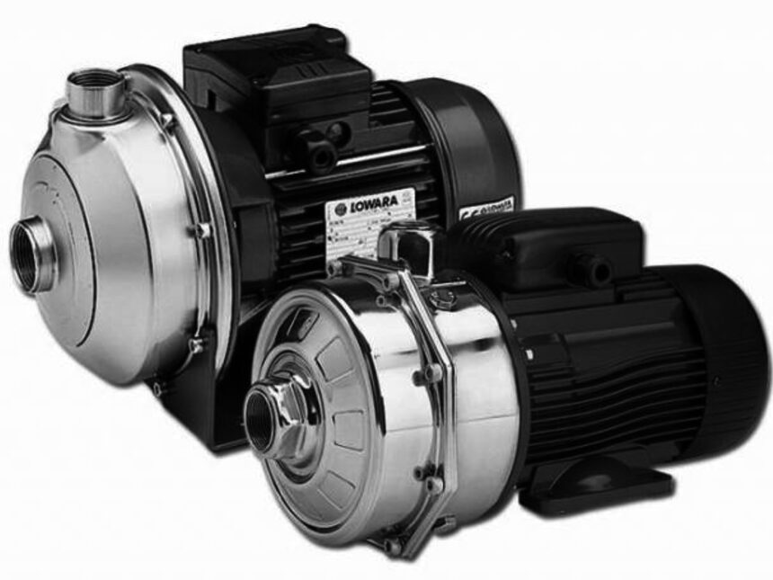

Центробежные, секционные, консольные, погружные, винтовые и герметичные насосы с магнитной муфтой. Подбор по рабочей точке и опросному листу, оригиналы и аналоги. Работаем напрямую с заводами-изготовителями и официальными дистрибьюторами.

Консольные, вертикальные и многоступенчатые агрегаты для технологических процессов и общепромышленных задач.
запрос по параметрамСекционные насосы для поддержания пластового давления и перекачки воды при высоком напоре.
запрос по параметрамБессальниковое исполнение без динамических уплотнений: исключены протечки перекачиваемой среды.
запрос по параметрамОдновинтовые и двухвинтовые насосы для вязких продуктов, дозировочные агрегаты для реагентов.
запрос по параметрамПогружные и полупогружные агрегаты; запасные части: торцевые уплотнения, рабочие колёса, валы, подшипниковые узлы.
запрос по параметрамПримеры карточек позиций: многоступенчатый насос Grundfos CR 64, секционный насос ЦНС 180-1900. Все изделия — заказные: подбор ведём по рабочей точке и условиям эксплуатации.
Направьте опросный лист — вернёмся с ответом по вашим параметрам в течение 24 часов.
Насосное оборудование — одно из ключевых направлений поставок компании «НГО Групп». Мы работаем с насосным оборудованием для добычи, транспортировки и переработки: от буровых установок до нефтеперерабатывающих заводов. Поставляем оригинальное оборудование ведущих производителей, подбираем аналоги по техническим характеристикам и организуем изготовление нестандартных агрегатов по КД заказчика.
Каждая поставка сопровождается полным пакетом документов: сертификаты, паспорта, декларации соответствия ТР ТС.
Пришлите опросный лист, рабочие параметры или артикул существующего насоса. Инженер подберёт оригинал или аналог и подготовит ответ.